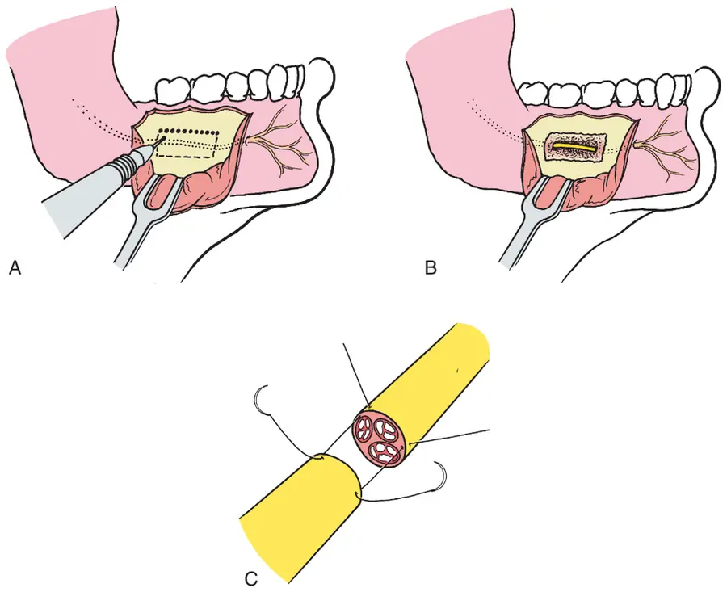

نسخه استخراجشده؛ ترجمه یا تأیید علمی انجام نشده است. وضعیت: captured
عصب لینگوال معمولاً از نظر آناتومیک درست چسبیده به سطح لینگوال مندیبل در ناحیهی رترومولار پد قرار دارد. و گاهی مسیر عصب لینگوال آن را به داخل خودِ ناحیهی رترومولار پد میبرد.

و جملهای که این عصب را از بقیه جدا میکند: عصب لینگوال اگر بهشدت تروما ببیند، بهندرت بازسازی میشود.
پس قاعدهی طراحی برش: برشهای زدهشده در ناحیهی رترومولار پد مندیبل باید طوری قرار گیرند که به این عصب نزدیک نشوند. بنابراین برشهایی که برای اکسپوز جراحی مولرهای سوم نهفته یا نواحی استخوانی ناحیهی مولر خلفی زده میشوند، باید کاملاً به سمت باکالِ مندیبل زده شوند. و به همین ترتیب، اگر فلپ رترومولار پد را هم دربر میگیرد، هنگام جدا کردن آن از دیسکسیون یا کشش بیش از حد بافتهای سمت لینگوال رترومولار پد پرهیز کن.
و جمعبندی: پیشگیری از آسیب به عصب لینگوال اهمیت درجهاول دارد، تا از این عارضهی دردسرساز پرهیز شود.
و سرانجام، عصب آلوئولار تحتانی. این عصب ممکن است در طول مسیر کانال داخل استخوانیاش تروما ببیند. شایعترین محل آسیب، ناحیهی مولر سوم مندیبل است.
و سه نوع آسیب: برداشتن مولرهای سوم نهفته ممکن است عصب را در کانالش کوفته کند، له کند، یا بهطور تیز آسیب بزند.
و یک تعهد ارتباطی که از فراوانی این عارضه میآید: این عارضه حین کشیدن مولرهای سوم بهقدر کافی شایع هست که مهم باشد بهطور روتین پیش از عمل به بیماران اطلاع داده شود که یک احتمال است. و پس از آن، جراح باید همهی احتیاطهای ممکن را برای پرهیز از آسیب به عصب حین کشیدن به کار بندد.
و اگر آسیب رخ داد — یک قاعدهی زمانمحور: اگر عصب لینگوال یا آلوئولار تحتانی آسیب دیده باشند، جراح باید بیمار را برای مشاوره به جراح دهان و فک و صورت ارجاع دهد. و این کار باید بیدرنگ انجام شود، چون: اگر ترمیم عصب اندیکاسیون داشته باشد، هرچه ترمیم زودتر انجام شود، شانس بازیابی کامل عملکرد عصب بهتر است.
ساختار عمدهی دیگری که میتواند حین کشیدن در مندیبل تروما ببیند، مفصل گیجگاهی-فکی است.
مکانیسم: برداشتن دندانهای مولر مندیبل اغلب به اعمال مقدار قابل توجهی نیرو نیاز دارد. اگر فک حین کشیدن بهاندازهی کافی حمایت نشود تا این نیروها را خنثی کند، بیمار ممکن است در این ناحیه درد را تجربه کند.
پیشگیری — و دو قاعدهی ساده: نیروی کنترلشده و حمایت کافی از فک، از این آسیب پیشگیری میکنند. و بهصورت چکلیست: حین کشیدن از مندیبل حمایت کن، دهان را به باز شدن بیش از حد وادار نکن.
و دو راه عملی حمایت:
و اگر بیمار بلافاصله پس از عمل از درد ناحیهی مفصل شکایت کند، درمان چهار جزء دارد:
و برای بیمارانی که ضدالتهاب غیراستروئیدی را تحمل نمیکنند: میتوانند ۵۰۰ تا ۱۰۰۰ میلیگرم استامینوفن مصرف کنند.